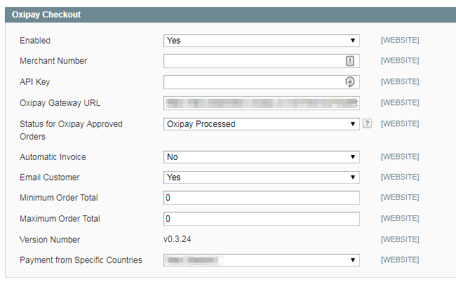

Setting up Oxipay on a Magento 2 Store
This document outlines the steps needed to integrate the Oxipay Payment Gateway into your Magento v2 store.
Note
Issues might be encountered if using an earlier version or a later version. If you do encounter issues, then please contact us to resolve them as soon as possible.
Important
Installing the Plugin
You can install the Oxipay Plugin manually by copying the Oxipay Magento plugin code that is provided to you into the Magento root folder.
Important
1 - Navigate to the URL below and then click on the Download repository link; this will download a zip file; rename that .zip file to Oxipay.zip
URL: https://github.com/oxipay/oxipay-magento-1.x/releases
2 - Unzip the Oxipay.zip folder and then copy the app folder into your Magento store root directory.
Important
3 - Copy all files in the unzipped Oxipay folder Oxipay/app into the /app folder in your Magento root folder.
4 - Login into the Magento Admin Panel, then from the left side menu, click on System.

5 - This will open up the System submenu. Click on Cache Management.

6 - From within the Cache Management page, click on the Flush Magento Cache button in the top right.

7 - Confirm that Oxipay has been installed on your Magento Store. To do this, click on System in the Admin Panel then on Configuration.

8 - This will open up the Configuration page, scroll to the bottom and then click on Payment Methods on the left side menu.

9 - Confirm that Oxipay Checkout is visible as a Payment Method and once expanded it looks similar to the image below.
